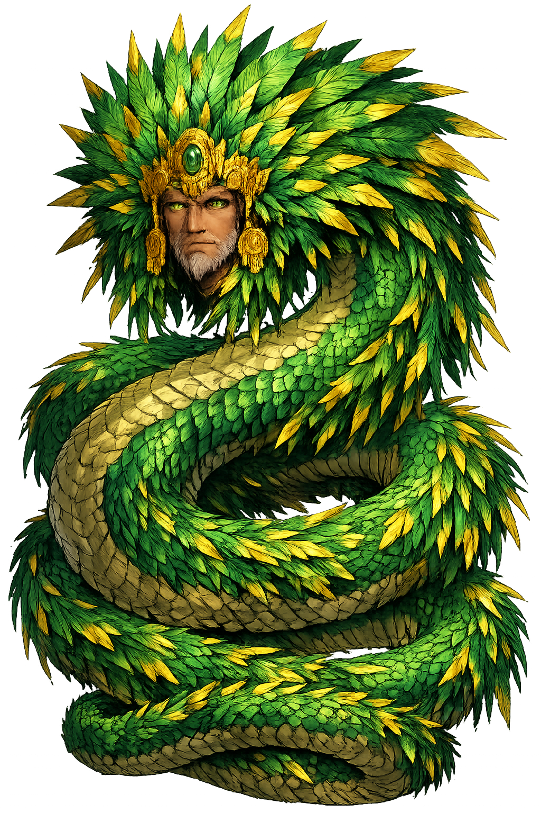

The Authentic Orthography
Wind, Wisdom, Morning Star · Feathered serpent

Unicode restoration and ASCII comparison
Quetzalcōātl
The name survives only in scholarly transliteration. Quetzalcōātl is the standard Nahuatl romanisation, documented in academic sources — “Feathered serpent”. Its macron-length vowels preserve distinctions lost in plain ASCII.
No indigenous writing system is securely attested for individual nahuatl names. The form shown is a modern scholarly transliteration.
quetzalcoatl
Reduced to plain quetzalcoatl, the name loses everything that made it specific: macron-length vowels. What remains is an ASCII string that machines can parse but that no longer speaks with its original voice.
Quetzalcōātl
The Unicode restoration recovers what ASCII flattened. Quetzalcōātl restores macron-length vowels, returning the name to its original written dignity. The domain encodes to Punycode, but the browser displays the truth.
Quetzalcōātl.com → xn--quetzalctl-1fb52g.com
The non-ASCII characters in Quetzalcōātl are encoded while the ASCII remains visible. To the DNS, it is Punycode. To humanity, it is Quetzalcōātl.
How Quetzalcōātl is preserved in writing
No indigenous writing system is securely attested for individual nahuatl names. The form shown is a modern scholarly transliteration.
Contribute scholarly provenance →How Quetzalcōātl was spoken
Wind, Wisdom, and the Morning Star
Quetzalcōātl is the living bridge between heaven and earth, between the iridescent quetzal of the cloud forest and the coiled serpent of the underworld. In Nahuatl thought he moves through every medium: the wind that carries speech, the dawn light of Venus, the ink and paper of the calmecac school, and the breath that animates the craftsman. He is less a storm god than a motion — the intelligent current that makes culture possible.
Unlike his shadow-twin Tezcatlipoca, the Smoking Mirror who rules night, sorcery, and the arbitrary turn of fate, Quetzalcōātl stands for daylight learning, measured speech, and the priestly arts. Where Tezcatlipoca deceives, Quetzalcōātl instructs. Yet the two are inseparable: creation itself required their partnership, and every age ends in their struggle.
As Ehecatl, the wind, he is the breath that precedes speech and the storm that scatters the old sun; his temple is a cylinder because the wind has no corners.
Patron of the calmecac, the school for noble youths; he invented the calendar, established fasting and penance, and taught the arts of the feather-worker and goldsmith.
The planet Venus as Tlahuizcalpantecuhtli, Lord of the Dawn; his return each morning heralds the sun and the renewal of time.
He shaped the Fifth Sun from the bones of the previous age and brought maize out of secrecy so that humankind could eat and flourish.
Stories of Quetzalcōātl
Quetzalcōātl's myths are not a single linear biography but a shifting constellation of roles: creator, priest-king, culture hero, exiled lord, and promised return. The narratives collected by Sahagún and other early colonial writers preserve the memory of a deity whose generosity and restraint are inseparable from his grief.
After the collapse of the Fourth Sun, the gods gathered at Teotihuacan to create a new era. Quetzalcōātl descended into Mictlān, the land of the dead, to retrieve the bones of the previous races. Mictlantecuhtli, Lord of the Underworld, agreed on condition that Quetzalcōātl not look at them on his way out. Unable to resist, Quetzalcōātl glanced down; the bones shattered. He gathered the fragments and, in Tamoanchan, ground them like cornmeal. The other gods bled their penises onto the meal, and from that sacrifice the humans of the Fifth Sun were formed. (Florentine Codex VI; Leyenda de los Soles.)
Maize was originally hidden inside a mountain, guarded by the ants. Quetzalcōātl, taking the form of a black ant or following an ant's trail, discovered the hidden grain and carried it back to the surface for humankind. The mountain split open; red, yellow, white, and black corns emerged. This myth binds Quetzalcōātl to agriculture, to the nourishment of the people, and to the colour-coded directions of Mesoamerican cosmology.
The historical and mythic dimensions merge in the figure of Ce Acatl Topiltzin Quetzalcōātl, a Toltec priest-king said to have founded Tollan (Tula). Under his rule, learning flourished, sacrifices were bloodless, and jade and quetzal feathers outnumbered obsidian blades. But Tezcatlipoca, playing on human weakness, tricked or shamed him into drunkenness and incest. Exiled, Quetzalcōātl abandoned Tula toward the east, burning his houses, burying his treasures, and promising to return across the sea in a year named One Reed.
When Hernán Cortés landed on the Gulf Coast in 1519 — a One Reed year in the Mesoamerican calendar — Moctezuma and others interpreted the event through the prophecy of Quetzalcōātl's return. The reliability of this account is debated: it served Spanish interests, and some modern scholars see it as a post-conquest rationalisation. What is certain is that the myth became a powerful interpretive frame, turning a deity of wind and wisdom into a symbol of interrupted sovereignty.
Quetzalcōātl is the god who knows too much. Unlike warriors who win by force, he wins — and loses — by intelligence, restraint, and the discipline of the fast. His myths keep returning to the same wound: a gifted being, too civilised for his own good, undone by a single lapse. That lapse may be a glance at forbidden bones, a cup of pulque, or a trust placed in the wrong companion. In every version, knowledge is fragile; the one who teaches humanity to live must also learn, too late, that living is harder than teaching.
Enter Extended Lore